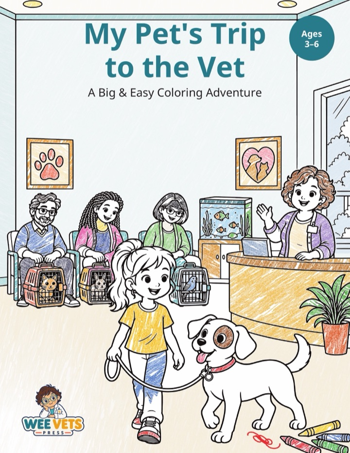
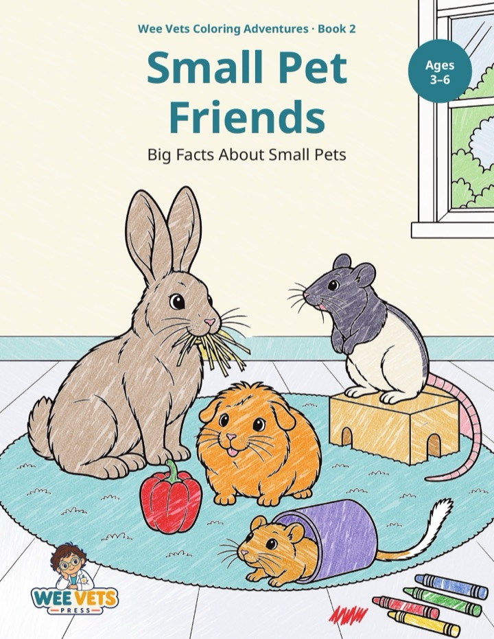
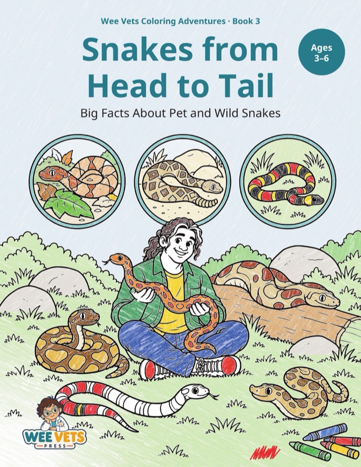
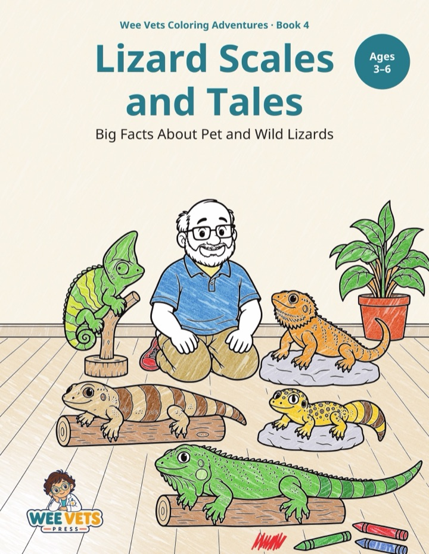
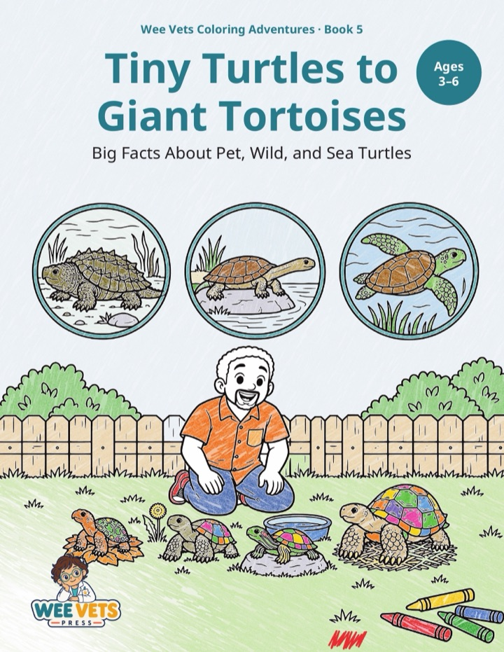
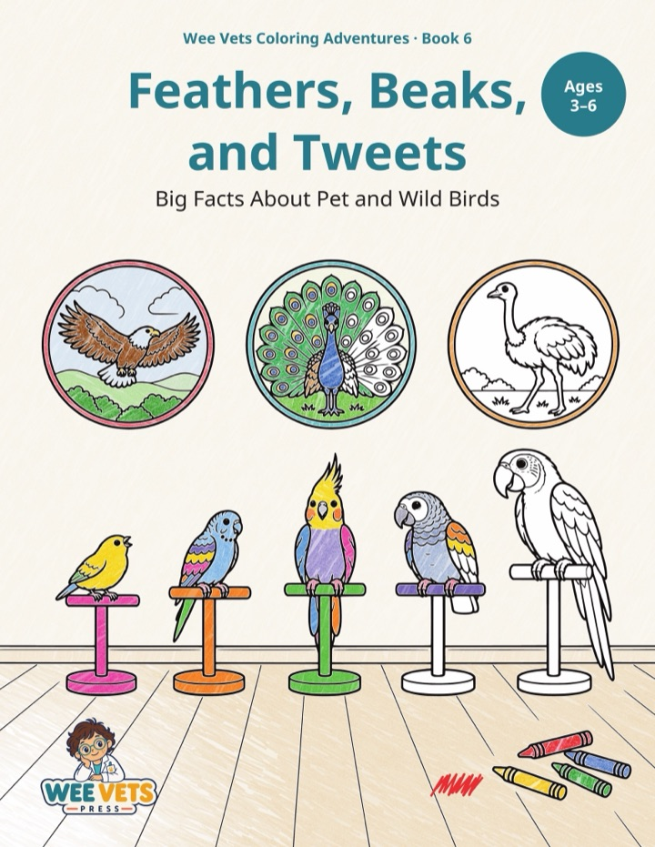
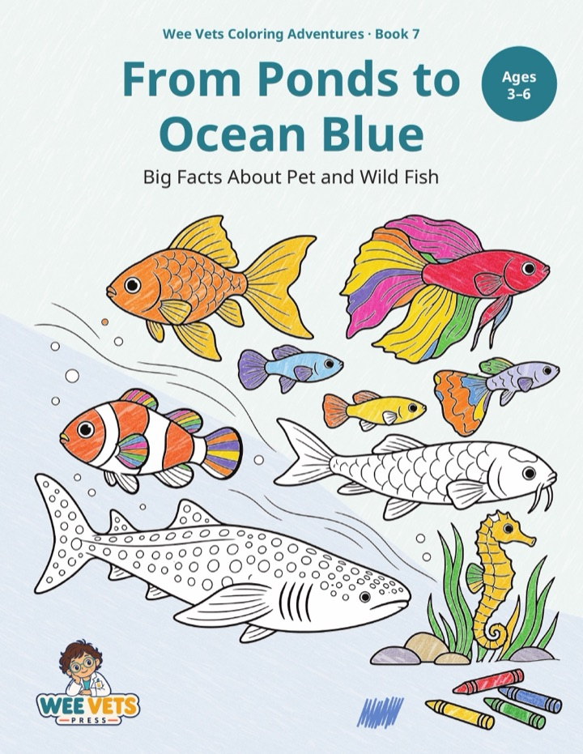

Where our facts come from
We don't print sources in the books, to keep the pages simple for kids. Here they are instead: the pages we read while checking the facts in each book. A veterinarian also reviewed every fact before the book went to print.
Each list includes background research, so a few pages cover facts that didn't make it into the final book. Listing a site means we read that page, not that we endorse everything on the site.
Open a book to see its list.

Book 1: My Pet's Trip to the Vet16 sources from 8 websites
Merck Veterinary Manual
- Merck Vet Manual, Choosing a Pet Bird
- Merck Vet Manual, Dental Care of Rabbits
- Merck Vet Manual, Dental Development of Dogs
- Merck Vet Manual, Fish Taxonomy
- Merck Vet Manual, Nutritional Problems of Guinea Pigs
- Merck Vet Manual, Reptiles
- Merck Vet Manual, Routine Health Care of Dogs
- Merck Vet Manual, Structure of the Skin in Cats
Australian Museum
American Kennel Club
aquatic.vetmed.ufl.edu
Cleveland Clinic
University of Florida IFAS Extension
VCA Animal Hospitals

Book 2: Small Pet Friends45 sources from 11 websites
Merck Veterinary Manual
- Breeding of Gerbils
- Breeding of Rats
- Description of Gerbils
- Description of Rabbits
- Diet for a Guinea Pig
- Diet for Rabbits
- Gerbils
- Guinea Pig Anatomy and Behavior
- Home for a Rabbit
- Home for a Rat
- Management of Rabbits
- Mice and Rats as Pets
- Nutritional Problems of Guinea Pigs
- Routine Care of Guinea Pigs
- Routine Care of Rabbits
- Special Considerations for Rats
RSPCA
Research papers
House Rabbit Society
VCA Animal Hospitals
amcny.org
PetMD
research.wayne.edu
- Wayne State DLAR rat guide (page no longer online, checked November 3, 2026)
Scottish SPCA
U.S. Centers for Disease Control and Prevention

Book 3: Snakes from Head to Tail95 sources from 53 websites
U.S. National Park Service
Virginia Herpetological Society
Florida Museum of Natural History
Merck Veterinary Manual
SREL
Animal Diversity Web (University of Michigan)
Missouri Department of Conservation
VCA Animal Hospitals
NC Wildlife
U.S. Centers for Disease Control and Prevention
Florida Fish and Wildlife Conservation Commission
Research papers
RSPCA
asu.elsevierpure.com
Bird and Hike
Britannica
CaliforniaHerps
CBS News
Colorado Parks and Wildlife
Dublin Zoo
ebm-journal.org
frontiersin.org
Georgia DNR
Georgia Tech
Gopher Tortoise Council
Happy Hollow Zoo
herpconbio.org
Illinois Natural History Survey
JSTOR Daily
KQED Deep Look
LafeberVet
Lee Richardson Zoo
Louisville Zoo
Mader 2009, DVM360
Minnesota DNR
oieau.fr
pure.psu.edu
Reptiles of Arizona
SeaWorld Parks and Entertainment
Smithsonian's National Zoo
texnat.tamu.edu
The Conversation
U.S. Food and Drug Administration
U.S. Geological Survey
University of Nebraska
University of Queensland 2023
Virginia Zoo
whitman.edu
Wikipedia
WikiVet
zoosprint.org

Book 4: Lizard Scales and Tales114 sources from 47 websites
VCA Animal Hospitals
Animal Diversity Web (University of Michigan)
PubMed Central (U.S. National Library of Medicine)
U.S. Centers for Disease Control and Prevention
LafeberVet
Merck Veterinary Manual
Research papers
San Diego Zoo fact sheet
U.S. National Park Service
University of Florida IFAS Extension
Florida Fish and Wildlife Conservation Commission
Smithsonian's National Zoo
Australian Museum
Honolulu Zoo
PubMed (U.S. National Library of Medicine)
San Diego Zoo Wildlife Alliance
Auckland Zoo
beardeddragonsworld.com
- Bearded Dragons World (page no longer online, checked November 3, 2026)
bgsu.edu
- BGSU Herpetarium care sheet (PDF) (page no longer online, checked November 3, 2026)
brown.edu
buffalozoo.org
californiaherps.com
ecotox.oehha.ca.gov
goldengooseaward.org
IUCN
kb.rspca.org.au
Louisville Zoo
mdpi-res.com
National Geographic
ncwildlife.gov
nhm.org
pages.uoregon.edu
PBS Nature
PetMD
racinezoo.org
reptiledirect.com
reptilia.org
sciencedaily.com
SeaWorld Parks and Entertainment
senecaparkzoo.org
smcmvcd.org
vetmed.illinois.edu
vickaryouslab.com
web.corral.tacc.utexas.edu
WikiVet

Book 5: Tiny Turtles to Giant Tortoises88 sources from 53 websites
Animal Diversity Web (University of Michigan)
NOAA Fisheries
VCA Animal Hospitals
Smithsonian's National Zoo
U.S. Fish and Wildlife Service
Florida Fish and Wildlife Conservation Commission
PubMed Central (U.S. National Library of Medicine)
San Diego Zoo Wildlife Alliance
U.S. Centers for Disease Control and Prevention
U.S. National Park Service
dwr.virginia.gov
galapagos.org
LafeberVet
Merck Veterinary Manual
Sea Turtle Conservancy
archive.britishcheloniagroup.org.uk
assets.publishing.service.gov.uk
Australian Museum
California Fish and Game Commission
cdn.environment.sa.gov.au
chelonian.org
cites.org
dec.ny.gov
dnr.illinois.gov
dnr.state.mn.us
fieldofmar-e.schools.nsw.gov.au
guinnessworldrecords.com
herpneb.unl.edu
iflscience.com
invasions.si.edu
iucn-tftsg.org
Missouri Department of Conservation
ncwildlife.gov
news.maryland.gov
nhm.ac.uk
oaklandzoo.org
oriannesociety.org
pa.gov
philadelphiazoo.org
portal.ct.gov
research.fs.usda.gov
sainthelena.gov.sh
torontozoo.com
tortoisetrust.org
tpwd.texas.gov
U.S. Food and Drug Administration
U.S. Geological Survey
University of Florida IFAS Extension
vet.tufts.edu
vetmed.tamu.edu
wildlifedepartment.com

Book 6: Feathers, Beaks, and Tweets132 sources from 47 websites
VCA Animal Hospitals
- African Grey Parrots, General
- Budgies, Feeding
- Budgies, General
- Canaries, Feeding
- Canaries, Feeding
- Canaries, General
- Cockatiels, Feeding
- Cockatiels, General
- Household Hazards and Dangers to Birds
- Macaws, Feeding
- Macaws, General
- Teflon (PTFE) Poisoning in Birds
- Uropygial or Preening Gland in Birds
- Veterinary Care, New Bird Visit
Animal Diversity Web (University of Michigan)
LafeberVet
- Avian Exam (2021)
- Basic Information Sheet, African Grey
- Basic Information Sheet, Canary
- Basic Information Sheet, Cockatiel
- Basic Information Sheet, Macaw
- Basic Information Sheet, Parakeet (budgie)
- Canary
- Cockatiel
- Foods Toxic to Pet Birds (C. Pollock DVM)
- Parrot species page
- Perch diameter sizes (2018)
- Understanding the Avian Egg (2013)
- Why Feathers Are Nature's Finest Design (2025)
Cornell Lab of Ornithology: All About Birds
Merck Veterinary Manual
- Care of Orphaned Native Birds and Mammals
- Feeding a Pet Bird
- Household Hazards for Pet Birds
- Illness in Pet Birds
- Importance of Veterinary Care in Pet Birds
- Introduction to Birds
- Management of Pet Birds
- Nutritional Diseases of Pet Birds
- Providing a Home for a Bird
- Skin and Feather Disorders of Pet Birds
- Table, Popular Pet Birds
- Toxicoses of Pet Birds
National Audubon Society
- A Beginner's Guide to Reading Bird Tracks in Snow (2018)
- Here's Why Birds Rub Their Beaks on Stuff (2019)
- The Art of Hatching an Egg, Explained (2016)
- The Multiple Miracles of Bird Feathers (2012)
- The Science of Feathers (2011)
- What's That Beak For? (2020)
- When You Should, and Should Not, Rescue Baby Birds
- Why Birds Are Anti-Aging Superstars
U.S. Centers for Disease Control and Prevention
U.S. Fish and Wildlife Service
U.S. National Park Service
San Diego Zoo Wildlife Alliance
Natural History Museum, London
UC Museum of Paleontology
World Parrot Trust
Oryx 53(2), 2019
American Museum of Natural History
ASPCA
Associated Press via NBC News (2007)
Australian Museum
Britannica Kids
California Dept. of Fish and Wildlife
Denver Zoo
govinfo.gov
Guinness World Records
Illinois DNR, Outdoor Illinois Journal
Nevada Department of Wildlife
New Mexico Secretary of State
NSW Dept of Education
Oregon Humane Society
Oregon Zoo
Owl Research Institute
Pennsylvania Game Commission
Rhode Island DEM
ScienceDaily, Johns Hopkins release (2013)
Smithsonian Learning Lab (Qrius)
Stanford Birds
The Alex Foundation
Today's Veterinary Practice
Toronto Zoo
Tufts Cummings School of Veterinary Medicine
UC Davis Vet Med
University of Chicago News (2019)
Wikipedia
WikiVet
Wisconsin DNR

Book 7: From Ponds to Ocean Blue154 sources from 60 websites
Florida Museum of Natural History
Animal Diversity Web (University of Michigan)
FishBase
Merck Veterinary Manual
U.S. Fish and Wildlife Service
Minnesota DNR
NOAA Fisheries
PetMD
Missouri Department of Conservation
U.S. Centers for Disease Control and Prevention
Georgia Aquarium
NOAA Ocean Service
U.S. Geological Survey
University of Florida IFAS Extension
Aquatic Veterinary Services (same vet)
South Carolina DNR
SRAC 180
University of Georgia CAES (2004)
Wisconsin DNR
American Academy of Pediatrics: HealthyChildren.org
Audubon Nature Institute
Baker 1987, PhD thesis
bearworks.missouristate.edu
California Dept. of Fish and Wildlife
Connecticut's Beardsley Zoo
Cornell Cooperative Extension of Suffolk County
Federal Register 80(163), Aug 24, 2015
Florida Fish and Wildlife Conservation Commission
Henry Vilas Zoo
Japan Tourism Agency
koreascience.kr
Manta Trust
Minnesota DNR MinnAqua
National Geographic
NOAA Ocean Exploration
North Dakota Game and Fish
Oceana
PBS Nature
PubMed Central (U.S. National Library of Medicine)
Royal Veterinary College, Beaumont Sainsbury Animal Hospital
RSPCA
Rutgers news (2020)
Save Our Seas Foundation
Science News (2014)
SEDAR30-AW-03 (Rios 2012)
Texas Parks & Wildlife Magazine
The Conversation (M. Tupper, Univ. of Portsmouth)
The Naked Scientists
U.S. Coast Guard Boating Safety
U.S. National Park Service
UF/IFAS Circular 54
VCA Animal Hospitals
Virginia Institute of Marine Science
Washington Dept. of Fish and Wildlife
World Aquatic Veterinary Medical Association
Found a link that no longer works? Email support@smallanimalsurgeries.com.